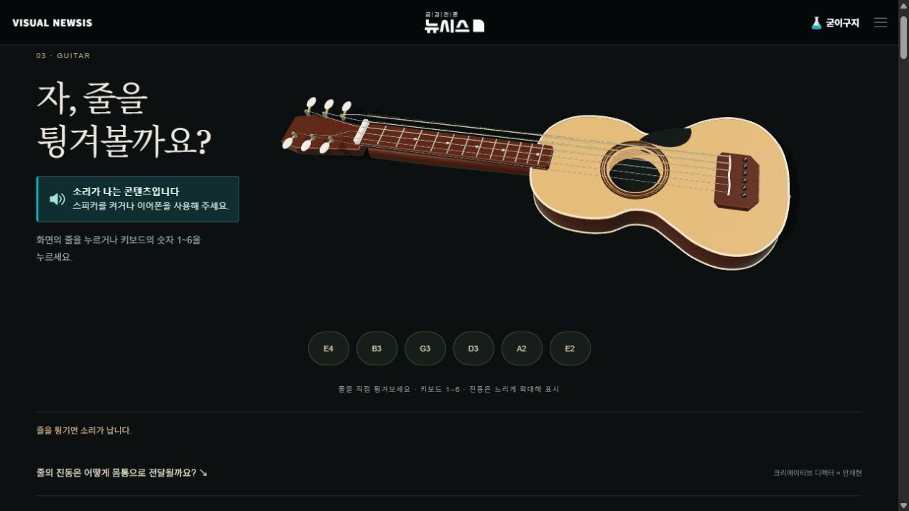
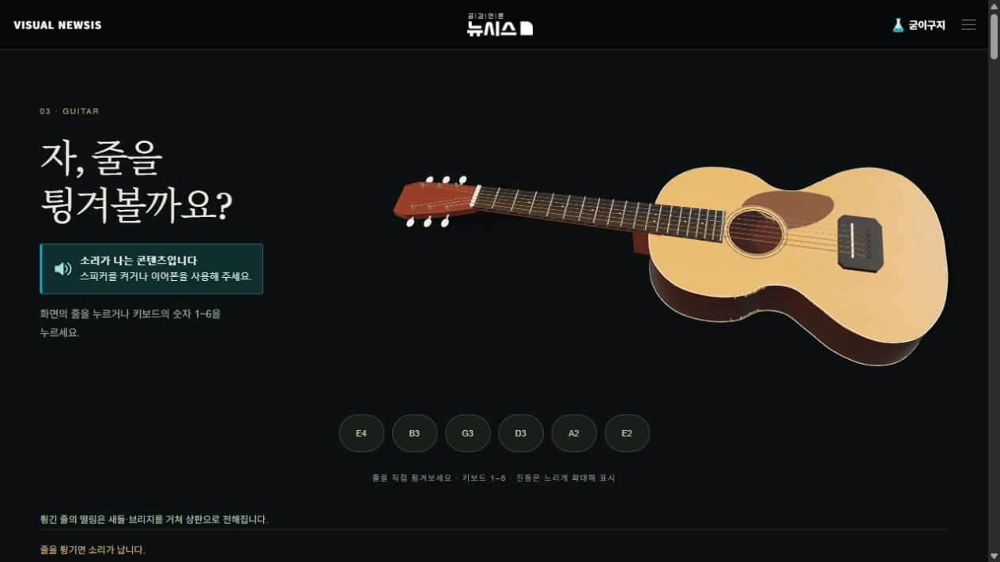
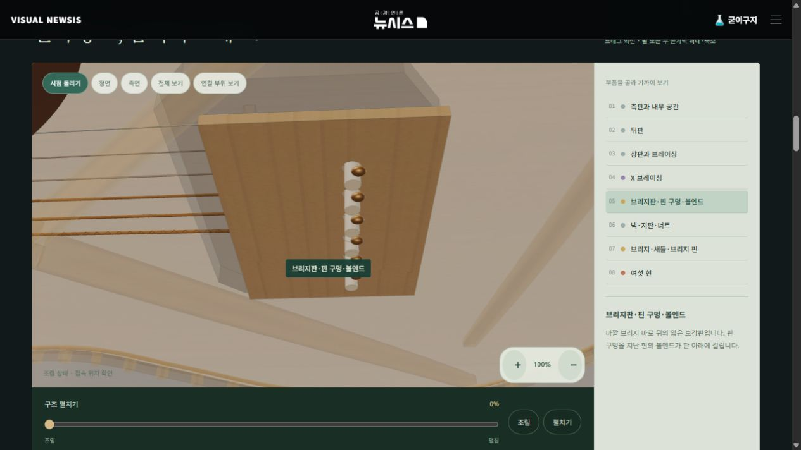
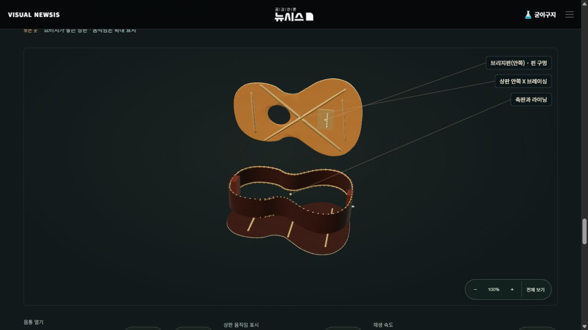
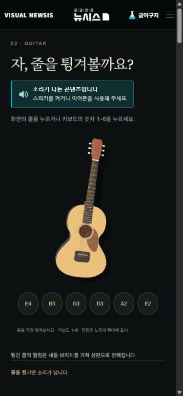
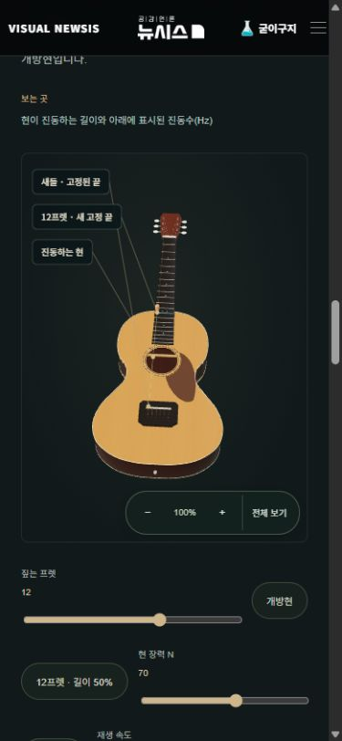

안재현의 굳이구지 연구소 · 내부 검수 기록 · 2026.10.27기타 편 개선 결과
공개 배포 완료 / 운영 파일 57개 일치 / 공개 주소의 조작·음정 확인
기타 편 열기 ↗ · 랜딩의 공개 순서는 유지했습니다.

수정 전
수정 후 · 실제 작동하는 3D 모형달라진 부분
| 항목 | 이전 | 수정 |
|---|
| 시각적 줄 진동 | 횡 0.12 / 수직 0.05 | 횡 0.0075 / 수직 0.0035 · 횡진폭 93.75% 축소 |
| 시각적 감쇠 | 3.6초 | 2.2초 |
| 악기 구조 | 지판 밖 현·원통형 목·떠 있는 새들/튜너 | D형 넥·힐·테이퍼 지판·19프렛·접촉 위치 정합 |
| 내부 관찰 | 장면마다 별도 구조 / 판과 따로 남는 테두리 | 하나의 원본 모델 재사용 · X 반턱 브레이싱·라이닝·브리지판·핀홀·볼엔드 |
| 작동 실험 | 나무 블록과 선 | 같은 기타의 튜너·지판·손가락·프렛·새들로 길이와 배음 비교 |
진폭 숫자는 모형 좌표의 표시값입니다. 실제 악기 진폭 측정값이 아닙니다. 오디오는 합성음이며 제조사 CAD나 목재·공기 공명의 물리 해석 모델은 아닙니다.
확대해서 확인하는 접합부

브리지판 · 핀 구멍 · 볼엔드. 같은 모형을 실제로 확대합니다.
바깥 브리지와 안쪽 브리지판의 같은 위치를 비교합니다. 판을 들어 올리는 배치는 관찰용입니다.검수
- Codex 독립 소스·지오메트리 검토 + 실제 ChatGPT·Claude 화면 검토, 수정 후 재검수.
- 회귀 검사 69개 통과. 상·뒤판의 열린 경계 0, 공유 면 방향, 19프렛, 너트·새들 접촉, 브레이스 간섭, 고정 끝점과 독립 현 진동, 왕복 복귀 확인.
- E2 82.4Hz를 선택한 뒤 12프렛(길이 50%)에서 164.8Hz로 이어짐을 브라우저에서 확인. 빠른 입력 뒤 마지막 표시값과 재생 주파수 일치 확인.
- 13개 경로의 내부 링크·정적 자산·JSON-LD·기존 추적 태그 검증.
- 390px 모바일 화면에서 가로 넘침 0. 음 버튼 44×48px, 기본 회전과 체크 해제, 확대·축소, 조작부와 그림 비겹침 확인.
- 실제 iPhone·Android 기기의 GPU 및 음향 출력 검수는 미실시.
시연 순서
- 첫 화면에서 E2를 튕깁니다.
- 파헤쳐보기 → 브리지판·핀 구멍·볼엔드를 선택해 확대합니다.
- 길이 실험에서 ‘12프렛 · 길이 50%’를 선택해 같은 현의 한 옥타브 높은 소리를 비교합니다.
- 몸통 열기로 상판 안쪽의 X 브레이싱과 브리지판을 보여줍니다.

모바일 첫 화면
모바일 길이 실험 · 조작부는 그림 아래에 배치검수 원문: ChatGPT · Claude · 검증 값. 이 파일과 검수 원문은 운영 사이트에 포함하지 않았습니다.